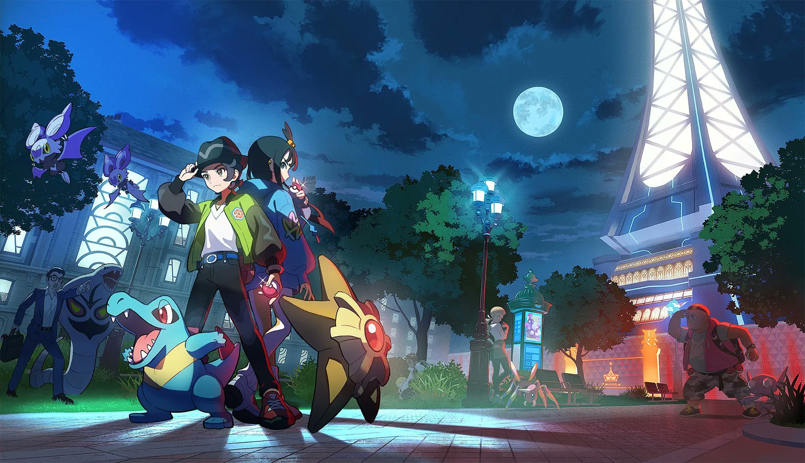
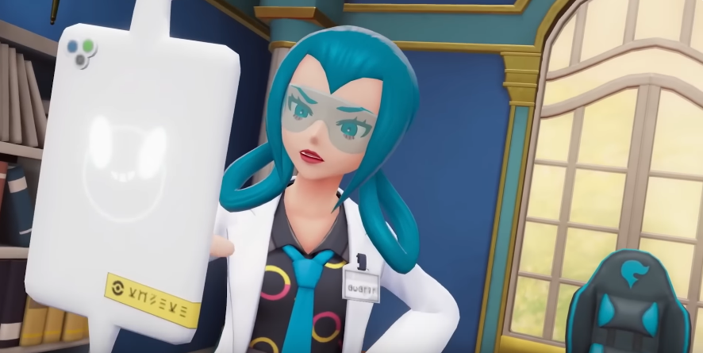
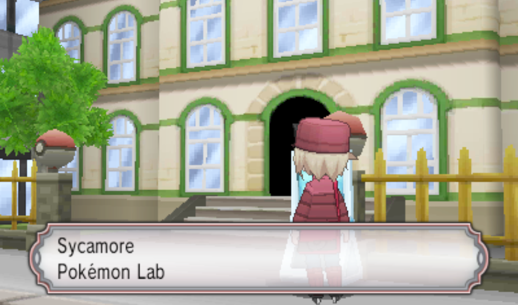

Pokémon Legends ZA
Update 8/21/2025: New demo footage has been shown of a player exploring Professor Sycamore'slab in Legends ZA. The full video can be found : here be The video shows the player character exploring all three floors of Sycamore's lab, including showing photographs of Professor Sycamore on the wall.
We can see him pictured here with Chespin, a Pokémon he is frequently depicted with. In addition, we see him with Garchomp. This could be considered a reference to the anime in which he has a Garchomp, alternatively, this could be seen as a reference to Cynthia's Garchomp, since it's often speculated that Professor Sycamore and Cynthia are friends due to them both learning under Professor Rowan in Sinnoh. In addition to these photographs, an NPC has this to say:
Loosely translated, this means:"Even the professor has given up his position..." which is a major clue on what's happening with Professor Sycamore in Legends ZA. I can only speculate the whys! I personally believe it is a mixture of the rogue mega evolutions running around Lumiose, what happened with Lysandre, and his own lower-ish selfesteem. But what do you think?
Update 7/23/2025: The official story trailer has released for Pokémon Legends ZA, revealing a slew of new characters and even a new mega evolution. Below are new key arts of Lumiose City depicted both at day time, and night time, with both protagonists.
Did the story trailer reveal any new information in regards to Professor Sycamore! Yes, sort of! We are shown his lab! You'll notice it's no longer him in the lab, however. This is Mable, a character originally from Pokémon XY. She's in Professor Sycamore's office, soemwhat recreated from the XY games, with some minor changes.
According to the Official Legends ZA Website, Mable is described as the acting director of the Pokémon Research Lab. She has many responsibilities and perhaps a history that someone familiar with the XY games might be privy to! However, what does this mean for Professor Sycamore? Well, it means that he's no longer at the lab, for one! I will try to keep speculation to a minimum, but it can be safely assumed that Professor Sycamore isn't there for now. His whereabouts, age, appearance, reasoning, ect are all unknown as of this point.
We are also shown the research lab from the outside. For comparison's sake, I have included a screenshot of Professor Sycamore's lab from the original XY games.
As you can see, it's very changed from how it was in the original game. The building is an entirely different style. It could be argued that it is an upgrade in hardware, but it's also different from how it was illustrated in the manga, anime, and TCG. Does it matter? Well, it only matters if Gamefreak decides to acknowledge the change, I think! Additionally, the Sycamore Pokémon Lab is no longer called that. Its called the Pokémon Research Lab, instead, signifying that Professor Sycamore is indeed gone. Does that matter? Again, it only matters if Gamefreak decides to acknowledge it! Speculation is on an all time highw when it comes to Legends ZA and the story surrounding it, but I hope Professor Sycamore's whereabouts are explained soon!
The next update is bound to be when the game officially releases in October, howeve, I will be keeping a close eye on promotional material until then!
Update 5/28/2025: Oct 16th, 2025, is the official launch date for Legends ZA! In addition, the boxart for the game has also been revealed, here. Looking closely at the full resolution image, you can see the Legends ZA protagonists squaring off against Emma(of the XY games postgame) and a Mega Lucario. In the back, you can see things like mega Salamence, and even Brett and Vinny of Quasar as they stand next to an ominous device. What could it mean? Who can say!

Unfortunately, there are no updates to report on Professor Sycamore's whereabouts in Legends ZA as of yet. But stay tuned, there might be more information coming in July!
Pokémon Legends ZA was initially announced in 2024 through a Pokémon Presents. It's going to release for both the Switch and Switch 2 some point in 2025, but I'm not sure when. The game is set entirely within Lumiose City, so south boulevard(the location, not the webshrine!) will be making an appearance. I'm really excited for the release of Legends ZA, but the information we have in regards to Professor Sycamore in the game is minimal.
It's unfortunate, but he hasn't been spoken of at all, nor has he appeared in any trailers. On the official Pokémon Legends ZA website, we're shown a full illustration of Lumiose City as it looks in ZA. I have circled the Sycamore Pokemon Lab to show you where his lab is in Lumiose.

Leaks have said that he won't be the professor in the game at all, but does that mean he won't be in it at all? There are a lot of mysteries indeed! I will update this section as we get more information, but for now, it's all just speculation. I hope to see something about him soon! One of the really cool things about Legends ZA is that mega evolution is finally making its return to the franchise as a mechanic! I hope that there are even more mega evolutions to see.